Yasugi, Shimane: things to do, food and stays
Yasugi · Shimane
Yasugi
Highlighted on the Shimane map.
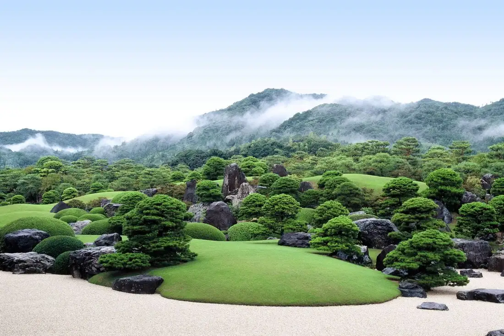
Stay
さぎの湯荘
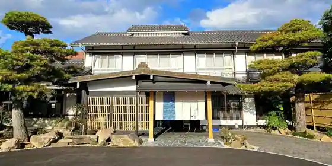
Sagino Yu So
YASUYA
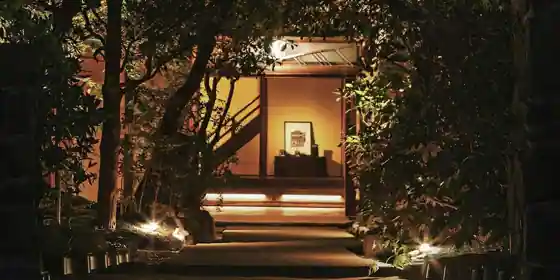
YASUYA
Inn in Hirose, Yasugi with one group per day and a renovated traditional house.
境内の宿 紅葉館
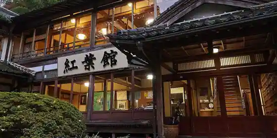
Keidai No Yado Koyo Kan
Inn in Shimizu, Yasugi with scenic views.
旅館 朝日館
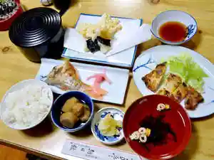
Ryokan Asahi Kan
Ryokan inn in Yasugi; 1-minute walk from Yasugi Station.
ホテルひさご家
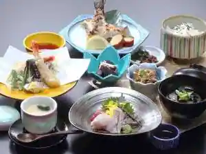
Hotel Hisago Ie
Hotel in Yasugi with parking; 2-minute walk from Yasugi Station.
ＨＯＴＥＬ ＡＺ 島根安来店

HOTEL AZ Shimane Yasugi
Inn in Kuroita, Yasugi; 15-minute walk from Jryasugi Station.
松琴館
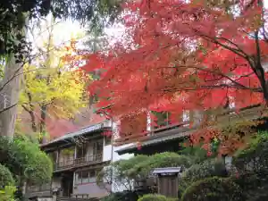
Shokin Kan
紅葉館
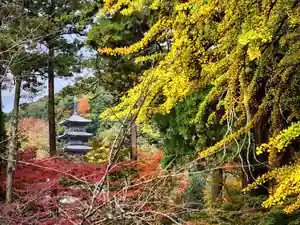
Koyo Kan
Inn in Shimizu, Yasugi with scenic views.
さぎの湯温泉 安来苑
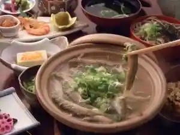
Sagino Yu Onsen Yasugi En
Inn at Saginoyu Onsen in Furukawa, Yasugi with pet-friendly rooms.
さぎの湯温泉 竹葉（足立美術館横の宿）
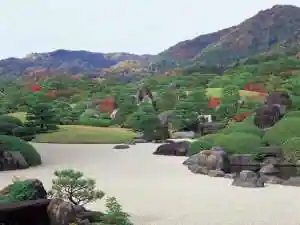
Sagino Yu Onsen Chikuha (Adachi Bijutsukan Yoko No Yado)
Inn at Saginoyu Onsen in Furukawa, Yasugi with free-flowing hot spring baths.
さぎの湯温泉 夢ランドしらさぎ
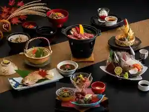
Sagino Yu Onsen Yume Rando Shirasagi
Inn at Saginoyu Onsen in Furukawa, Yasugi with a large communal bath.
オーベルジュ天空 別邸 母里
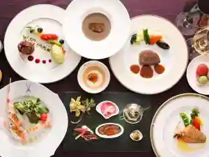
Oberuju Tenku Bettei Haha Sato
Dining
翆
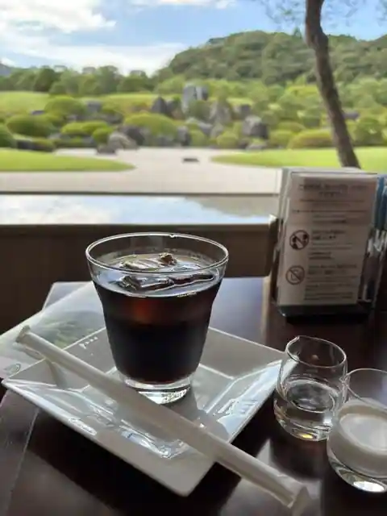
Sui
大観
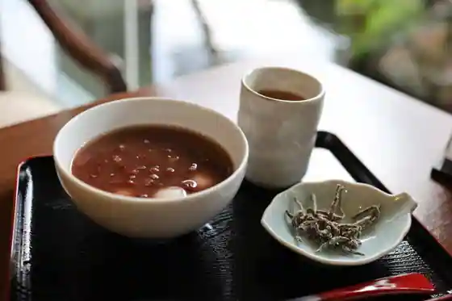
Taikan
そば処 まつうら
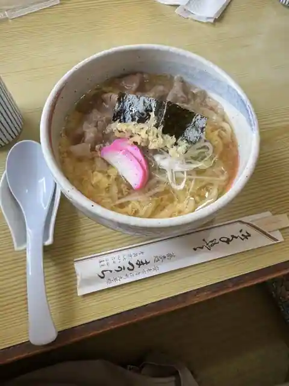
Soba Tokoro Matsura
ラーメン一刻
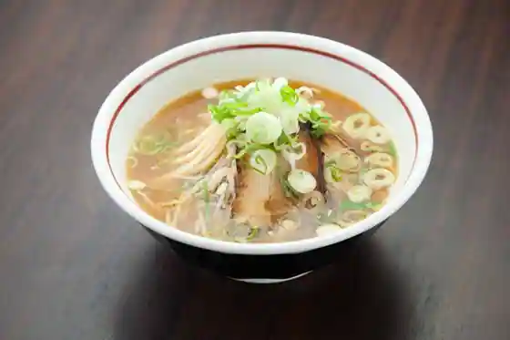
Ramen Ikkoku
カフェ ロッソ
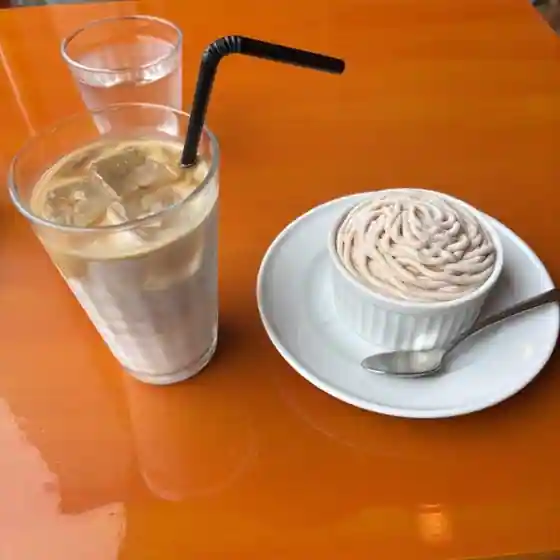
Cafe Rosso
グルメ＆コーヒー 舶来屋
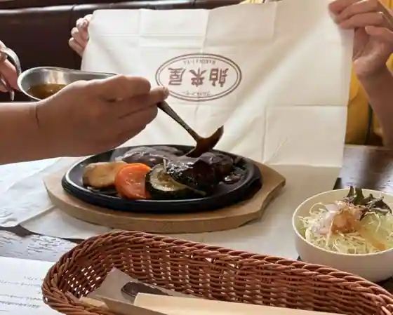
Gurume & Coffee Hakurai Ya
しばらく
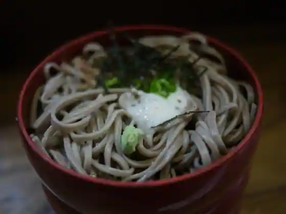
Shibaraku
中海の郷
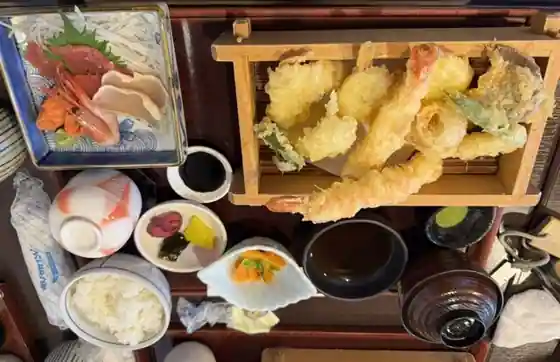
Nakaumi No Sato
清松庵
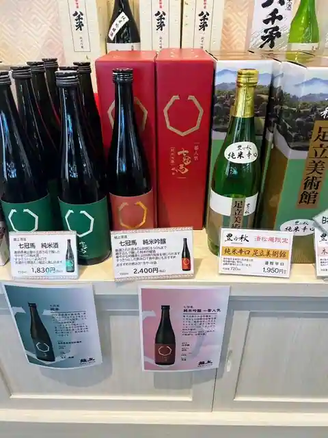
Kiyomatsu Iori
トリム
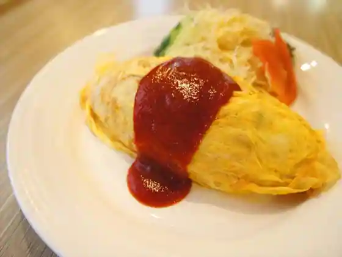
Torimu
鶏白湯らーめん 鶏吉
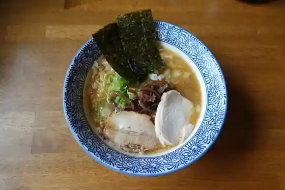
Niwatori Sayu Ramen Niwatori Kichi
あめのちハレ
Amenochi Hare
らーめん 松喜
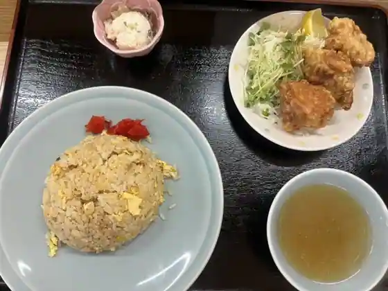
Ramen Matsu Ki
中華 かげやま
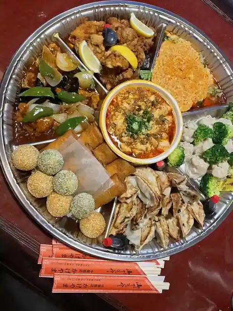
Chuka Kageyama
ローダンのラーメン 安来店
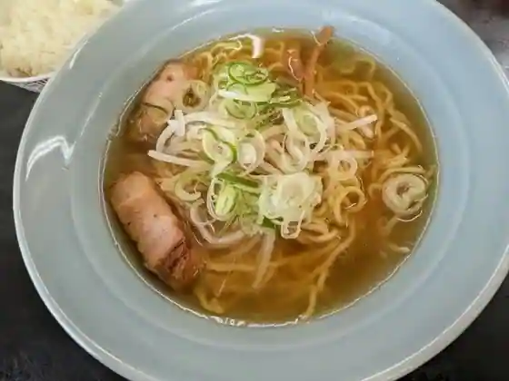
Rodan No Ramen Yasugi
道の駅 あらエッサ
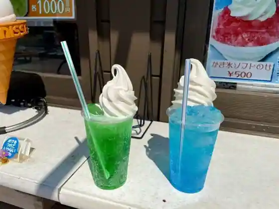
Michi No Eki Ara Essa
デリ&キッチン ハロ
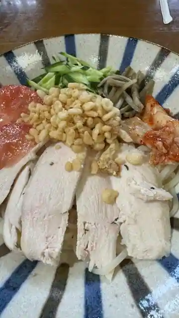
Deri & Kitchen Haro
わたなべ牧場 みるくハウス
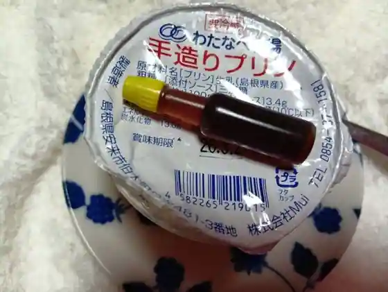
Watanabe Bokujo Miruku House
罵伊絵瑠
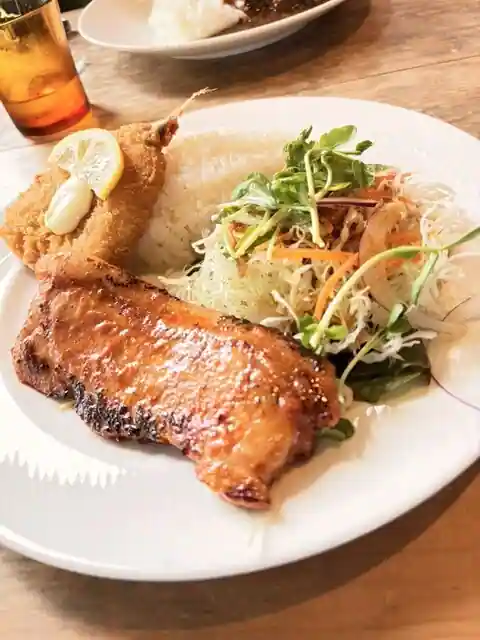
Ba I E Ru
西村堂
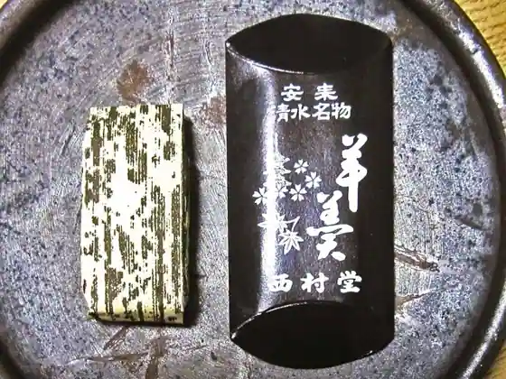
Nishimura Do
そばうどん処 尼子
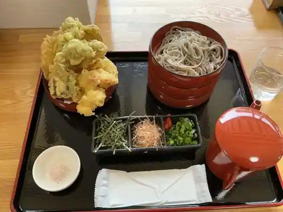
Sobaudon Tokoro Amako
Sights
Adachi Art Museum
Gassan Tomita Castle Ruins
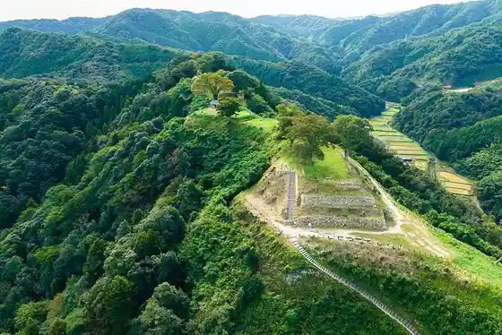
Yasugi Fushi Engei Kan
Kanayago Shrine
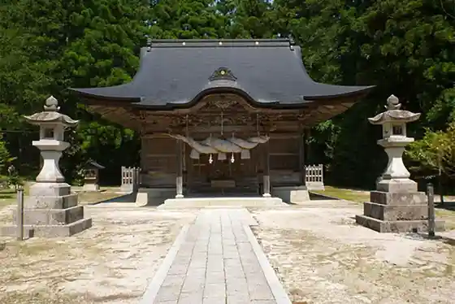
Roadside Station Ara Essa
Kiyomizudera
Roadside Station (Hirose Tomita Shiro)
Sagi no Yu Onsen Yasugi En
Sagi no Yu Onsen
Wa Ko Museum
Hakuta Churippufea
Hiba Yama Kume Shrine
Gatsu no Wa Shinji
Fube Dam
Yasugi Tourist Information
Kumo Ki Tera
Dojo Ryori
Yasugi Sogo Bunka Horu Arutepia
Kodai Izumo Oryo no Oka (Zozan Kofun Gun)
Shimizu Yokan
Yasugi Kanko Koryu Plaza
Hi Ta Onsen
Nijusseiki Nashi
Hirose Kasuri Center
Shingu to Yakatato
Nogi Shrine
Yamasa Dam
Yume Land Shirasagi
Yasugi Ritsu History Museum
Hirose Onsen Ikoi no Ie
Sanchu Shikanosuke Dozo
Den Amako Tsunehisa no Haka
Meshi Nashi Kawa
Yasugi Sports Park
SHERIE CAFE (Shieriikafe)
Kutsurogi no Yado Sagi no Yu So
Yasugi Kano Art Museum
Kiyomizudera no Autumn Leaves
Ju Kamiyama
Nawa Kuri Shrine
Yasugi Park
Kinzan Yaki
Sagi no Yu Onsen Chikuha
Hirose Gionmatsuri
Yasugi Fushi Ya
Taka Nyu Falls
Haha Sato Hancho Ato
Yuda Sanso
Naka Sen Tera Kofun Gun
Shiro An Tera
Renjo In
Watanabe Tourist Farm
Yasugi Fushi
Hirose Kasuri
Gan Kura Tera
Tomato Kari (LPC Bejitaria Farm)
Togetsu to
Izumo Hirose Hoen Kama
Hotel Hisago Ie
Izumo Shoku
Sanchu Shikanosuke Ikki to no Tokoro
Yamasa Damu Taiken Koryu Shisetsu (Yamabiko)
Cho Dai Tera
San'in Meicha
Hime Tsuka Burial Mound
Den Amako Haruhisa no Haka
Autumn Leaves Kan
Ganso Kuroda Sennen Do
Iwafune Burial Mound
Shiozu Yamaichi Go Fun
ARTEPIA CAFE (Arutepiakafe)
Ue no Dai Midori no Village
Shokin Kan
Yasugi Yakusho